Database, Migration, & Eloquent
Environment
- buka dokumentasinya dan ketikkan environment
- akan dikasih tau bahwa, didalam laravel itu ada yang disebut dengan file dotEnv
- file ini digunakan untuk melakukan setting pada lingkungan pengembangan apk kita
- karena nanti nya kita tidak akan menyimpan / mendistribusikan konfigurasi in, karena konfigurasi harusnya diketahui oleh developernya saja, tidak bisa dilihat orang lain, apalagi ketika apk kita sudah diupload, baik itu ke web hosting, ataupun ke kode repository kita diinternet
- ada file .env & .env.example
- .env.example : templatenya
- .env : variable sebenarnya yang digunakan oleh apk kita
- setelah install laravel sudah dikasih defaultnya, contoh APP_KEY : akan otomatis digenerate ketika kita selesai mendownload apk laravel kita dari composer
- APP_NAME : mengetahui nama dari apk kita
- APP_ENV : untuk memberi tau lingkungan pengembangan sekarang kita lagi tahap proses apa, ada local, development, production
- kalo kita ubah ke production prilaku laravel akan berubah, misal tidak akan menampilkan pesan kesalahan, selengkap kalo kita ubah dia jadi local
- ada perubahan lain yang intinya itu memberi tau, apk kita sudah siap untuk production
- APP_URL : memberi tau URL apk kita apa
- dan yang terpenting ada DB_CONNECTION
- disini menentukan konfigurasi database dari apk kita
- secara default memilih mysql sebagai DBMS nya atau Driver Databasenya
- ada DB_HOST : defaultnya localhost
- ada DB_PORT : untuk default databasenya
- DB_DATABASE : nama database
- DB_USERNAME : username database
- DB_PASSWORD : password database
- ada file .gitignore : kalo misal pakai git
- kita ganti DB
- aktifkan XAMPP untuk terkoneksi dengan database
- install MySQL Workbench
- setelah didownload buka apknya
- jika tidak bisa kita bisa menggunakan xampp
- katanya dilaravel, migration seperti version control untuk database kita
- version control itu seperti git, bisa melacak perubahan pada coding kita
- migration : melacak perubahan pada database kita lewat codingan laravel
- memungkin kita & tim kita untuk mendefinisikan serta mendistribusikan/ membagikan schema / struktur dari database kita
- jadi struktur nya tidak lagi kita buat didbmsnya tapi buat nya pakai codingan lewat class yang ada didalam laravel
- caranya kita akan menggunakan artisan command
- caranya ketik
make:migration, untuk membuat sebuah migrasi - tapi nanti kita lihat secara default laravel sudah punya beberapa file migrasi, yang bisa kita eksekusi
- kalo misal sudah ada file migrasinya, cukup eksekusi migrasinya
- tinggal tulis
php artisan migrate - nanti semua file migrasinya akan dieksekusi menjadi sebuah table
- buka terminal
- tiba2 didalam database kita ada table baru beserta table migration
- table migration, kalo tau git : file / folder .git, table ini akan melacak perubahan2 pada table lainnya
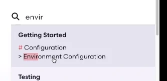
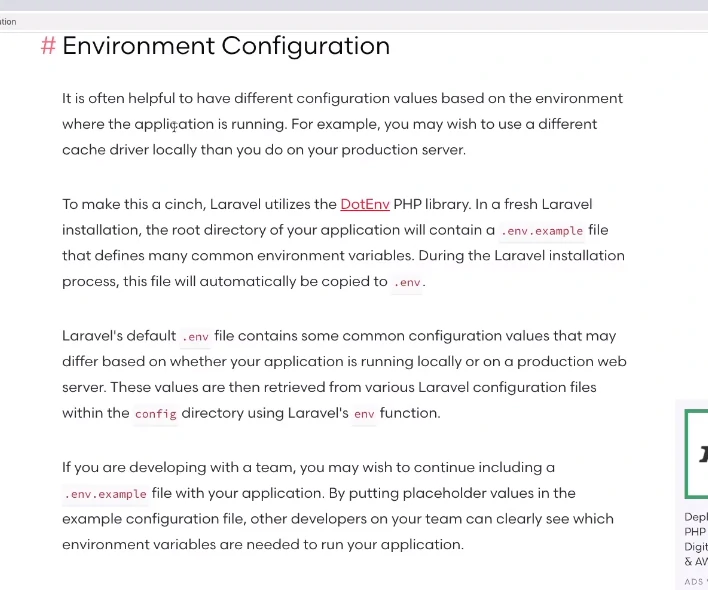
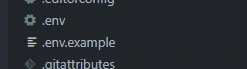
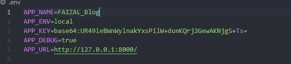
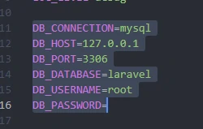
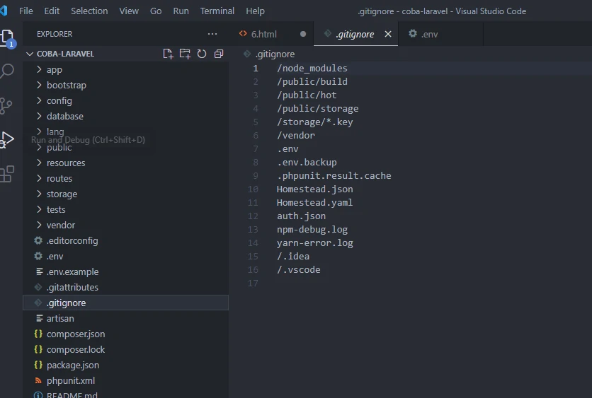
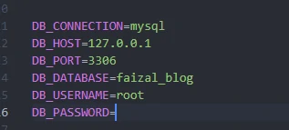
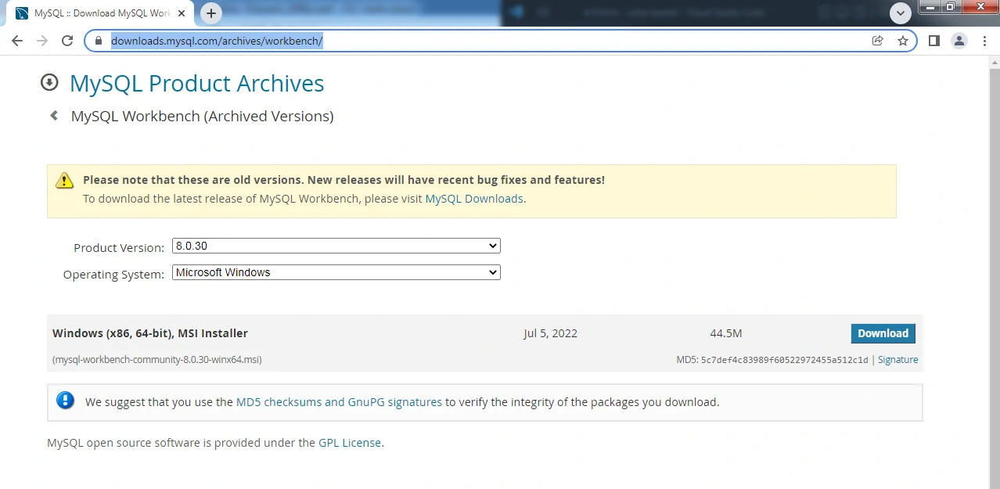
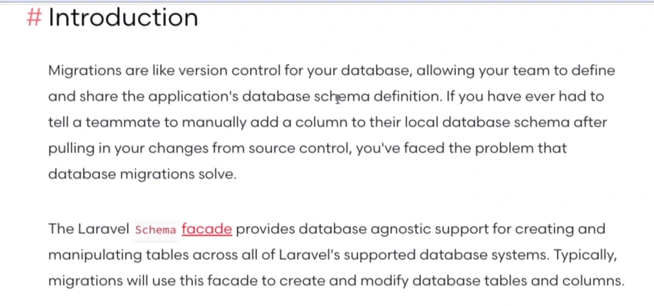
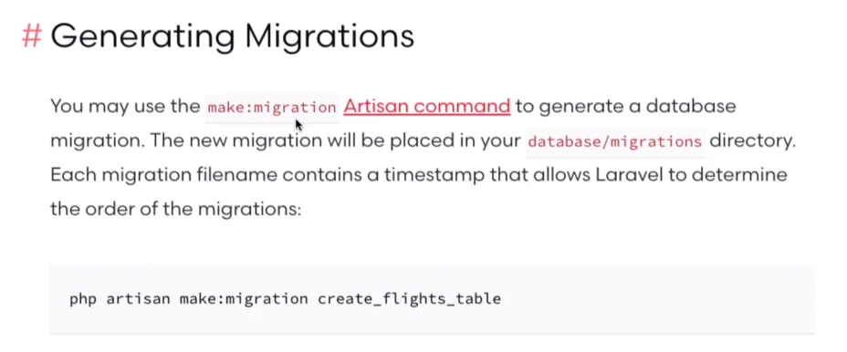
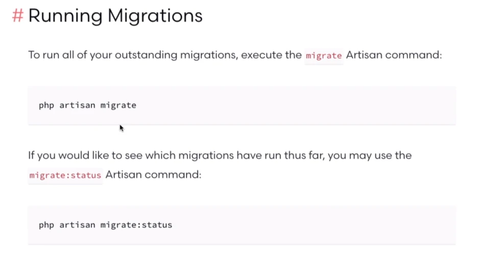
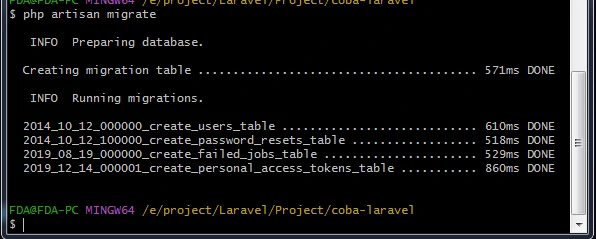
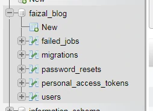
table2 ini muncul dari mana
- muncul karena ada file didalam folder database ada folder migration
- kita lihat diuser
- didalam file user ini, pasti ada 2 buah method dalam classnya
- ada method up & down
- up : method yang akan kita gunakan ketika kita mau bikin schema/struktur dari tablenya
- cara kita untuk bikin struktur table tidak lagi pakai dbmsnya
- dan up ini dieksekusi ketika ketik migrate
- down
- untuk menghilangkan schema yang kita bikin
- perintahnya : role back
- menghilangkan semua table didatabase
- semua table hilang kecuali migration, karena inilah yang melacak perubahan tadi
- akan keren banget ketika kita mau bekerja secara tim / mau melakukan development, kita tidak perlu repot2 lagi bikin table manual / bahkan export dan import database tidak perlu

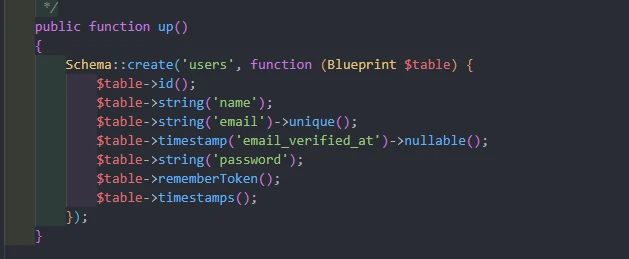
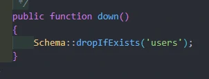
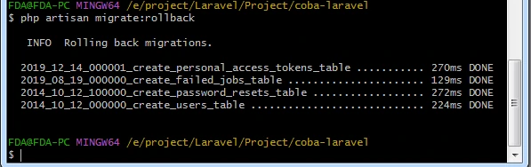
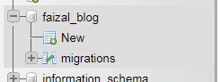
1 perintah melakukan ke2 nya
- fresh untuk melakukan roleback dan migrate sekaligus
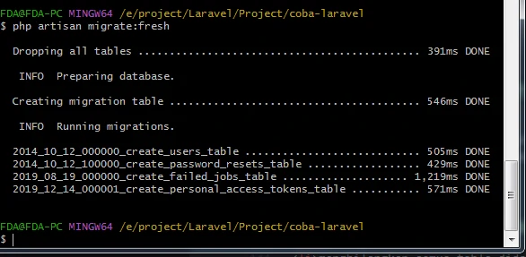
untuk apa fresh ini
- ketika kita mau mengubah schema dari table kita
- misal
- untuk mengubah property / struktur table kita
- ingin menghapus salah satu struktur
- jika kita sudah ubah keproduction akan ada peringatan
- jika ingin tau apa aja yang bisa kita pakai click aja column method
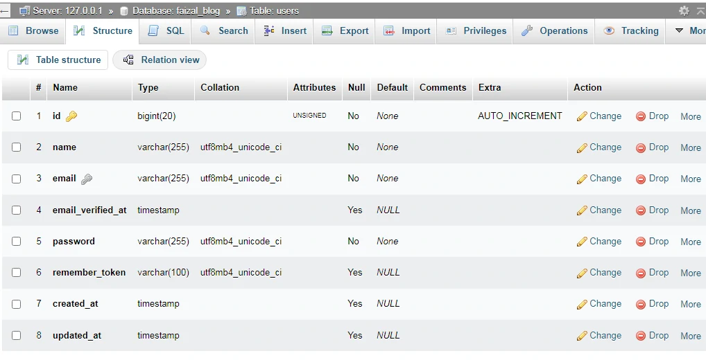
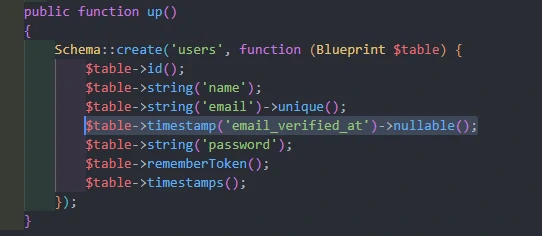
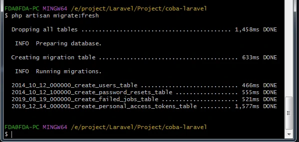
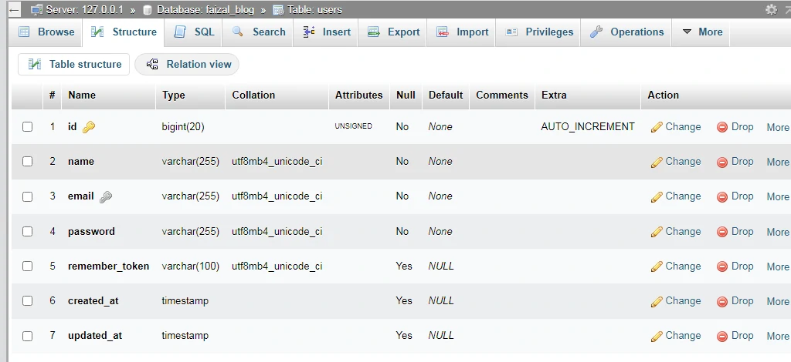
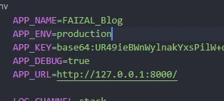
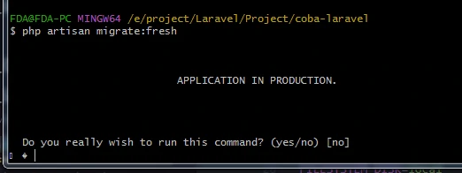

menambahkan dan menghapus 1 schema
- type data yang bisa kita pilih
- kita tambahkan 1 field untuk mengecek apakah user admin / bukan
- menambahkan data
- atur seperti default
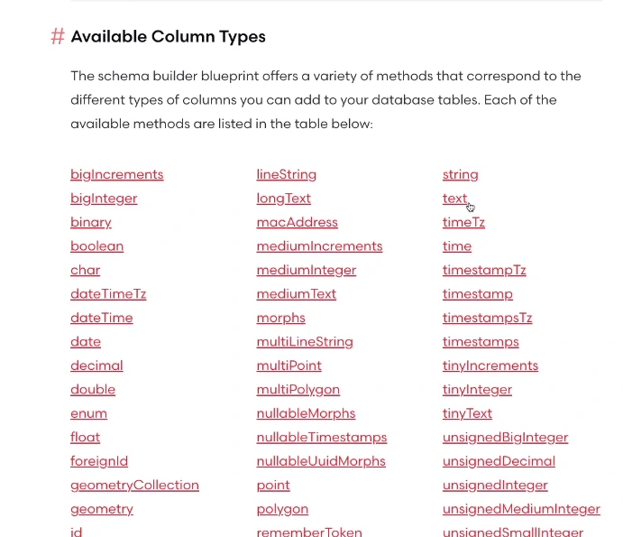
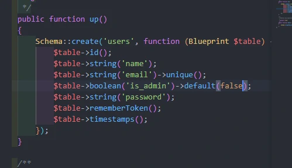
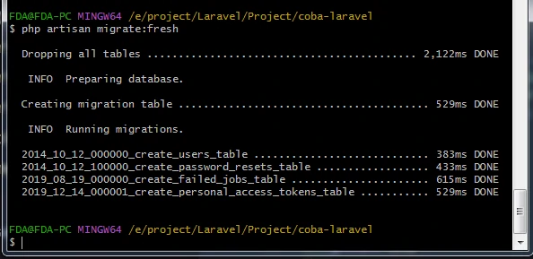
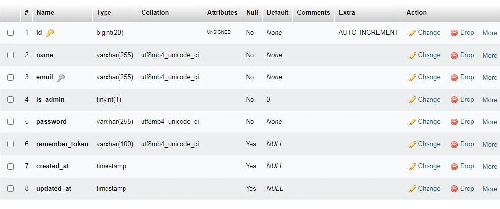
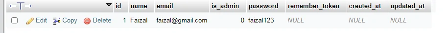
mengisi data tidak lewat dbms
- kita bisa mengisi data tapi tidak lewat mysql nya, bisa melakukan dengan mudah karena dilaravel ada eloquent
- ORM(Object Relational Mapper) : sebuah fungsi untuk memetakan tiap2 data yang ada didalam table / database nanti ke dalam sebuah object
- Eloquent : ORM yang dapat memudahkan kita berinteraksi dengan database yang kita buat
- saat menggunakan eloquent, setiap table didalam database kita, itu bercorresponding / terhubung kedalam sebuah model yang bisa kita gunakan untuk berinteraksi dengan table tadi
- antara website kita dan table didalam mysql kita ada perantara yang namanya model
- selain kita bisa mengambil data2 dari table didatabase kita, eloquent model memungkinkan kita juga untuk melakukan CRUD ke dalam table lewat codingan
- tidak perlu menyentuh database client
- bisa terjadi karena active record pettern
- Active record pattern : sebuah pendekatan untuk akses data didalam database
- jadi data didalam database kita itu dibungkus menjadi sebuah class, setip data / row terhubung ke dalam instance dari class nya / object
- pada saat membuat object, baris baru ditablenya akan ditambahkan pada saat kita melakukan save
- biasanya digunakan didalam ORM
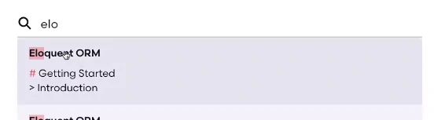
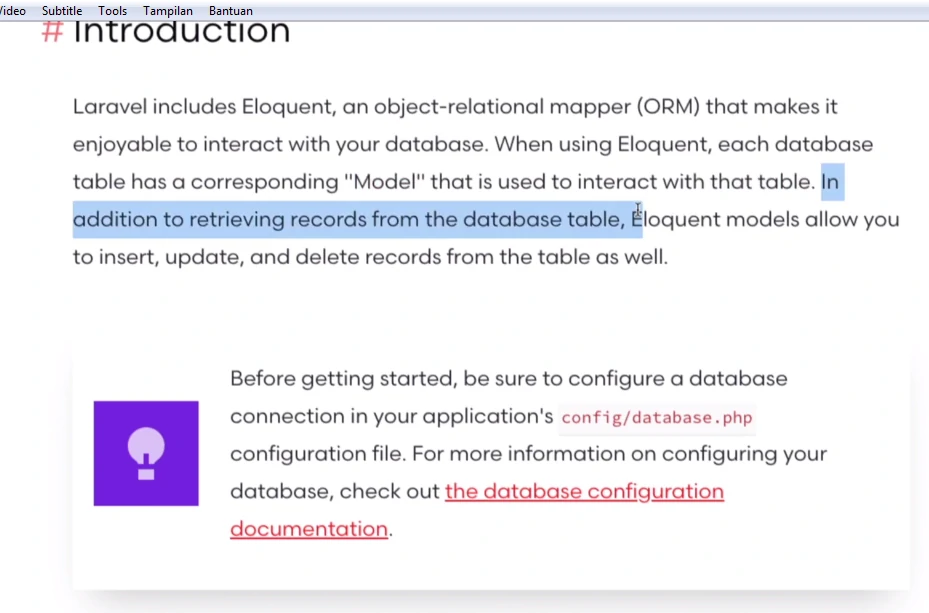
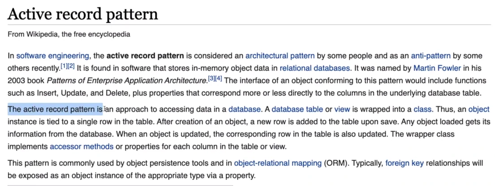
caranya
- akan masuk ke sebuah shell sudah bisa langsung kita hubungkan dengan apk laravel kita
- kita lihat app/models/
- file user.php sudah otomatis ada, file ini merupakan model yang pasangan dari table user
- buka file user.php nya
- fillable : file2 apa saja yang boleh diisi
- hidden
- kita bisa mengakses file user.php dengan cara :
- bikin user baru : bikin variable user
- sekarang $user merupakan intance dari model user
- sekarang kita isi field nya
- bcrypt : enkripsi password
- dengan melakukan ini kita sudah membuat 1 object yang namanya user berisi data diatas
- tapi ini belum tersimpan didatabasenya, jadi harus melakukan save
- ketik save, dan pastikan xampp nya aktif
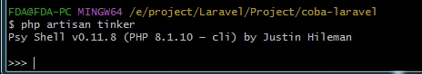
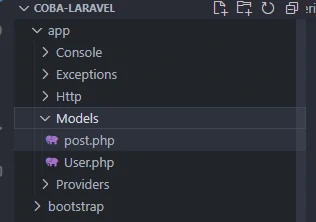
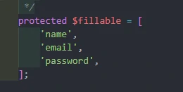
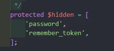
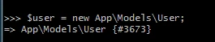
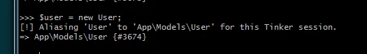
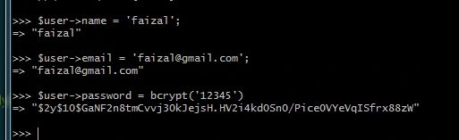
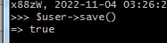
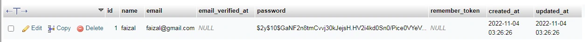
melihat isi didalam table user ada apa saja
- pakai tinker
- tambah datanya
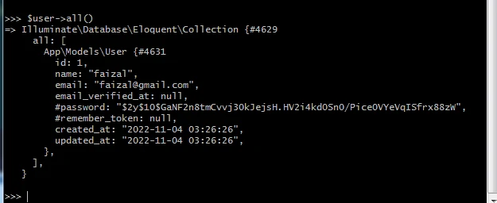
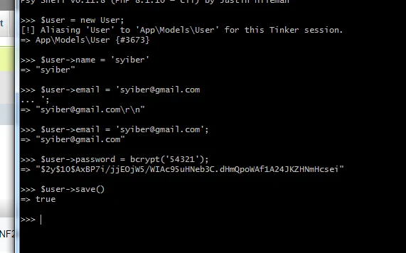
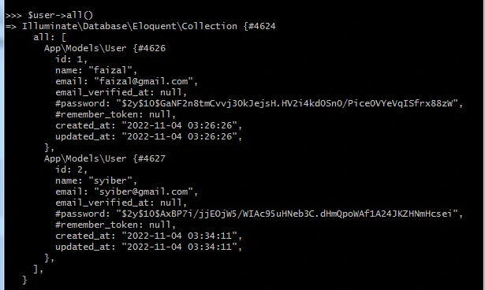
Menggunakan collection
- mencari urutan pertama : first()
- mencari user dengan id 2
- 1 method untuk menangani yang kita cari tidak ada
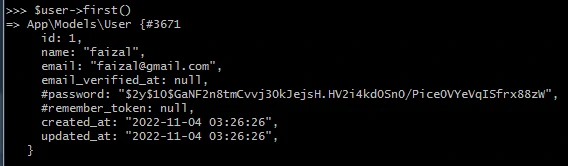
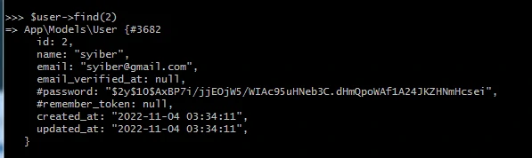
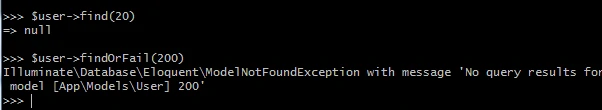